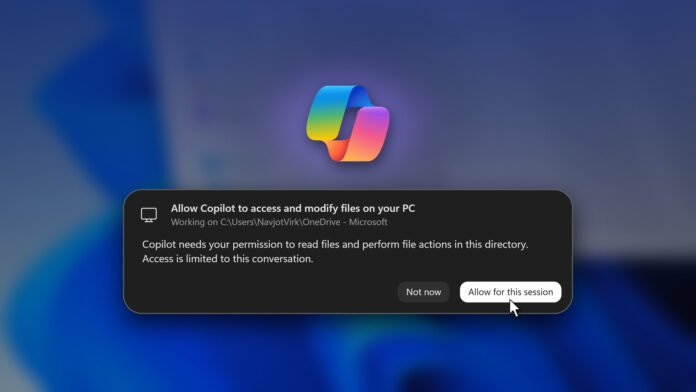

新闻 · 2026-11-21 12:00
拯救爆满的“下载”文件夹：微软 Win11 将推 AI 整理神器，授权后可查找 / 分类 / 移动 / 重命名文件
据IT之家援引Windows Latest报道，微软在Ignite 2026活动中展示Copilot“本地文件操作”功能，用户主动启用并授权后，可用日常语言让AI查找、分类、移动文件、创建文件和文件夹，并根据内容批量重命名。演示中将“下载”文件夹里的8份PDF整理到OneDrive；授权界面仅提供“暂不允许”和“仅本次会话允许”，访问范围限于当前对话及相关目录。

来源与核验
单一信源报道，未交叉核实